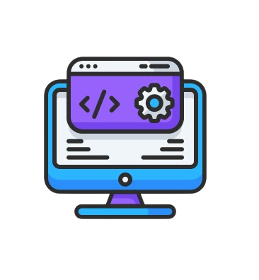

E-Library Management System is a web-based application that allows users to manage and access digital resources such as books, articles, journals, and other documents. It provides functionalities for both administrators and users, ensuring efficient management of library resources.
An Digital Data Hub is a software solution designed to efficiently and effectively manage the digital and physical resources within a information center. It aims to simplify the management of user data in cloud storage and enhance the overall experience for user to get data by more user interactions.
In front-end development like HTML, CSS & JS, In back-end development like Python & PHP,
In database like SQL, MongoDB & MySQL.
I am a full-stack developer. My projects showcase a range of skills including front-end development, back-end logic implementation, and database management. I am adept at understanding client needs and translating them into functional and user-friendly applications. I have acquired the skills and knowledge necessary to make your projects.
Hire MeI worked on comprehensive projects such as Digital Data Hub and Digital E-Library Management System.
These projects involved both frontend and backend development, giving me hands-on experience in
full stack development.
I am adept at understanding client needs and translating them
into functional and user-friendly applications.
I have acquired the skills and
knowledge necessary to make your projects.

Web development services for clients involve creating customized and functional websites tailored to meet specific business needs. From initial consultation to final deployment, Understand client goals and deliver a seamless online presence. Services typically include frontend and backend development, user experience design, responsive design for mobile compatibility, content management system integration, e-commerce solutions, and ongoing support and maintenance.
Contact me in this area like Gmail, Linkedin, Github and Instagram
Made by Sabari Vel © 2024